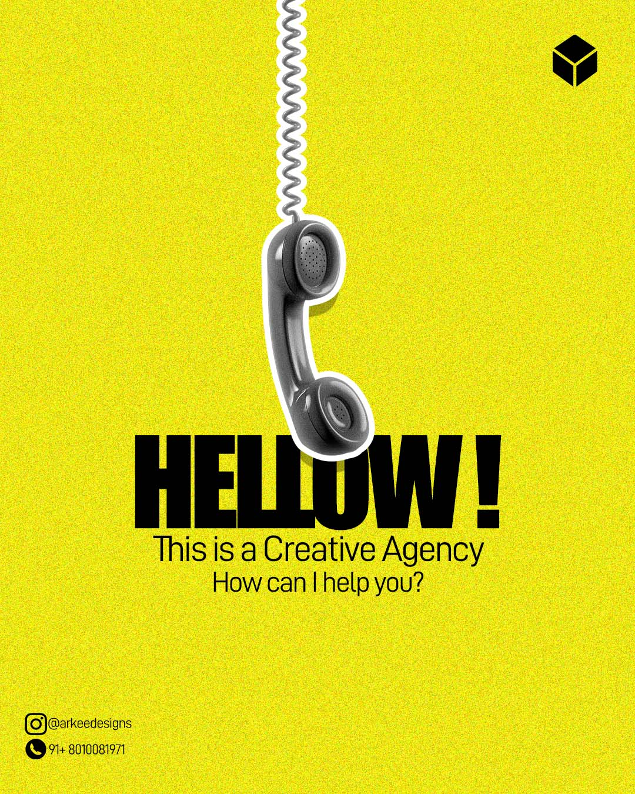
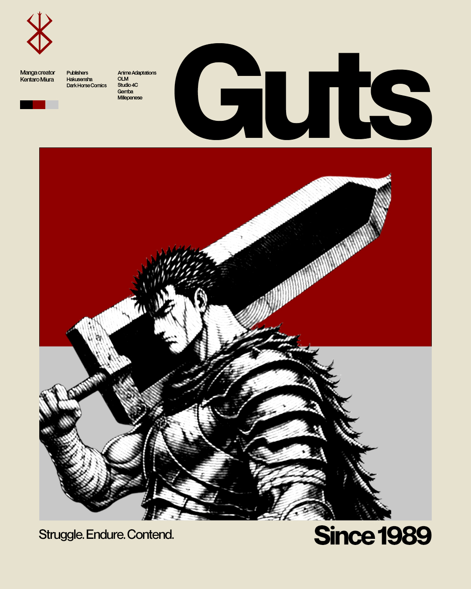
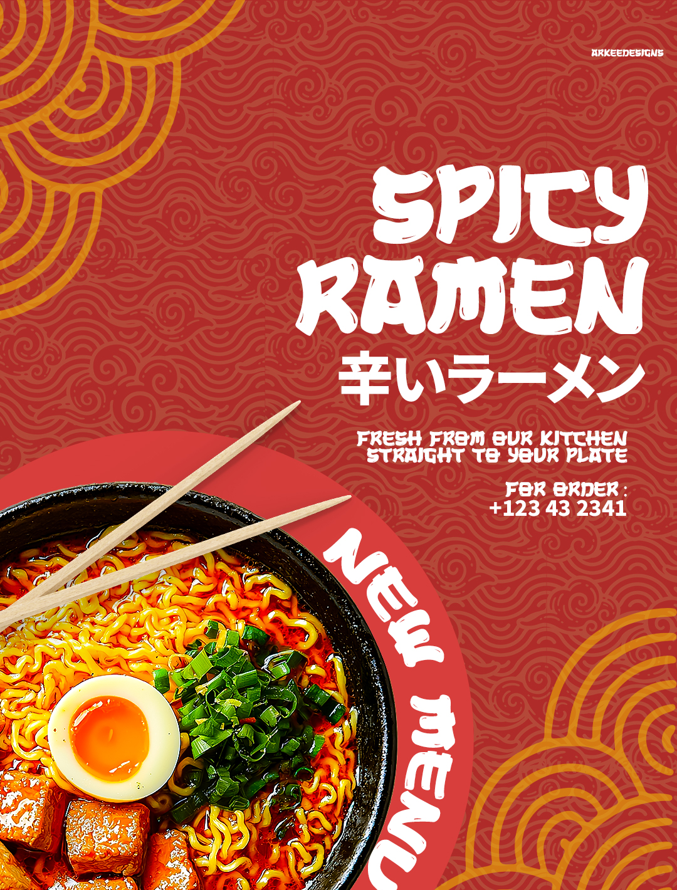

Editorial & Social Media Design
Crafting visual stories that demand attention.
I design high-impact brand identities, client news graphics, print posters, and educational carousels that pair seamless structure with bold typography.
View work
About Me
I am Aryan shelke, I'm a freelance designer who loves turning brands into something people actually want to stop scrolling for. Using Adobe Photoshop and Illustrator, I create Instagram posts, stories, reel covers, client news graphics, and full content kits that feel fresh, cohesive, and true to who you are. I'm big on clean layouts, intentional color choices, and the little details that make a feed feel put-together — and I genuinely enjoy getting to know a brand's personality before I start designing, so the result feels like you, not a template. If you're looking for someone who treats your social presence like it actually matters, I'd love to help bring it to life.
Core Skills
- Social Media Carousels
- Client News & Editorial Graphics
- Poster Typography
- Brand Identity Design
Selected Work








What I Offer
Brand Identity Design
Complete visual identity packages including logo design, color systems, typography pairings, and brand style guides.
Social Media Carousels
High-engagement, multi-slide posts for Instagram and LinkedIn that break down complex ideas into beautiful layouts.
Editorial & Poster Design
Large-scale print and digital posters, brochure layouts, book covers, and clean magazine grid systems.